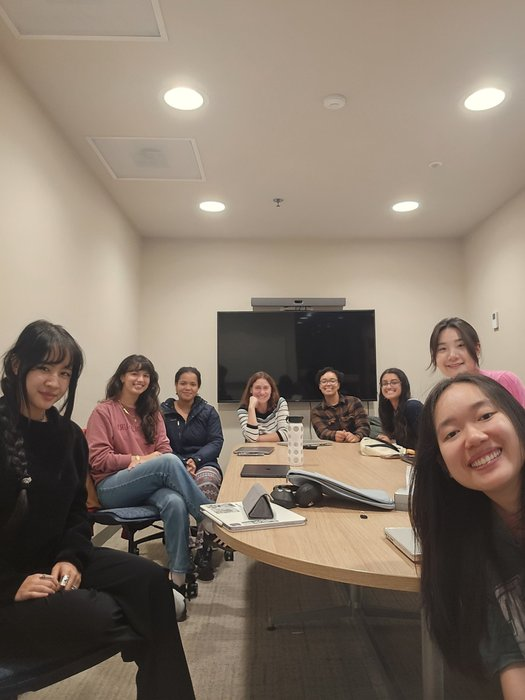
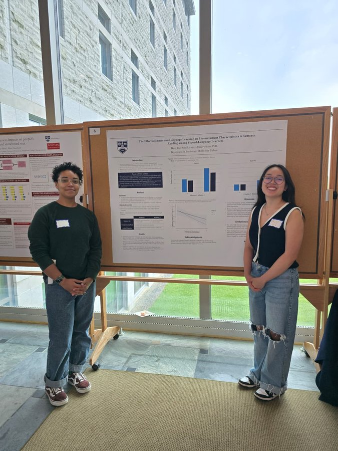
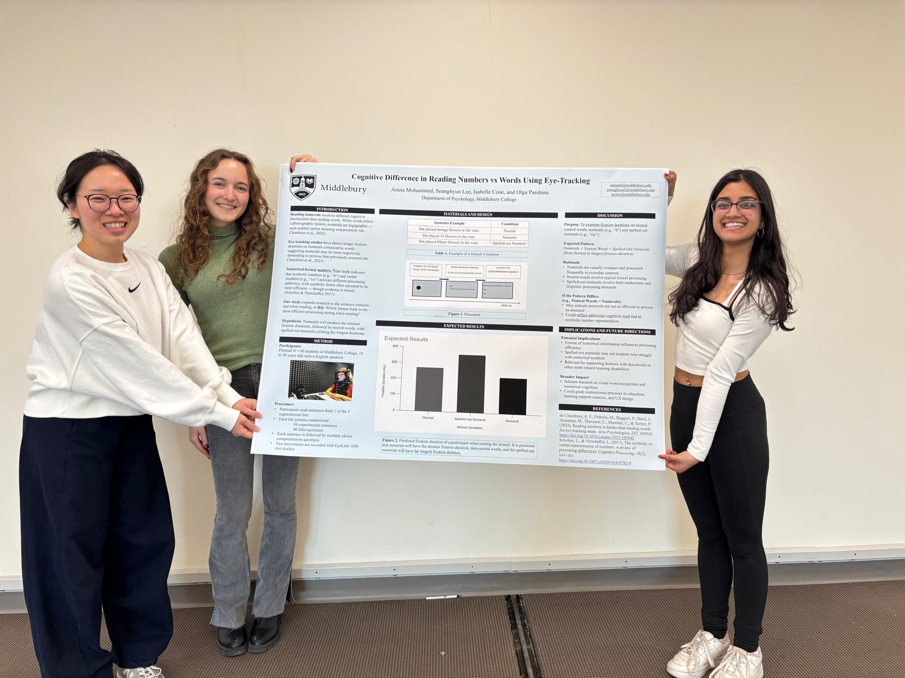

Who We Are
Meet the Lab

Dr. Olga Parshina
Principal Investigator
Visiting Assistant Professor of Psychology
Visiting Assistant Professor of Psychology
RAs
Research Assistants
Middlebury Undergraduates
Daisy Bui · Rene Laramee · Amna Mohammed · Aris Techasukij · Kate Vasquez · Nana Santos· Tess Armon · Gorazd Gajdov · Genevieve Stone · Zhaniya Murat · Talia Schaubach-Emmel

Lab meeting — the team at work

Undergraduate researchers presenting at a symposium

Getting ready to present the results!
Our Work
Selected Publications
2025
Wave 2 of the Multilingual Eye-Movement Corpus (MECO): New text reading data across languages. DOI →
Scientific Data, 12, 1183
2025
Bilingualism: Language and Cognition
2024
Journal of Experimental Child Psychology
2024
What can eye movements tell us about reading in Russian as a Heritage Language: Implications for theory and classroom.
In I. Dubinina & O. Kisselev (Eds.) Research in Russian as a Heritage Language: Lessons for the Classroom.
2024
Linguistic Approaches to Bilingualism
2024
Predictive language processing in Russian Heritage Speakers: Task effects on morphosyntactic prediction in reading. DOI →
Languages, 9, 158
2024
Linguistic Approaches to Bilingualism
2023
Cross-linguistic comparison in reading sentences of uniform length: Visual-perceptual demands override readers' experience. DOI →
Quarterly Journal of Experimental Psychology
2023
Does early exposure to spoken and sign language affect reading fluency in deaf and hard-of-hearing adult signers? DOI →
Frontiers in Psychology, 14
2022
Phonological deficit and its brain correlates in children with developmental dyslexia.
Russian Foundation for Basic Research Journal: Humanities and Social Sciences, 2, 145–158
2022
Annals of Dyslexia, 72, 403–425
2021
Reading Research Quarterly, 57(2), 469–490
2021
Bilingualism: Language and Cognition, 24(1), 69–82
Out in the World
Recent Presentations
2025
Spatial Parameters of Eye-Movement Control During Reading in Russian-Speaking Children
The Effect of Language Immersion on Bilingual Language Control During L2 Reading
2024
Cross-linguistic Comparison in Reading Sentences of Uniform Length
Processing of Agreement vs. Concord: Evidence from Russian Mouse-Tracking
Predictive Language Processing in Russian Heritage Speakers: Task Effects on Morphosyntactic Prediction
2023
Lexical and Morphological Effects on Eye Movements While Reading in a Polysynthetic Language
2022
Adult Literacy: Researching, Teaching and Assessing Reading and Writing Skills in Multilingual Contexts
Scanpath Analysis of Eye Movements During Reading in Children with High Risk of Dyslexia
Experimental Methods in the Field: Mission Impossible?
The Effect of the Global Language Context on Bilingual Language Control During Reading
2021
The Manner of Language Acquisition Matters for Lexical but Not Morphosyntactic Prediction
Monolingual and Bilingual Reading Processes in Russian: Scanpath Analysis
Get Involved
Do you want to join us?
We are always looking for new members to join our research team! Students should be responsible, committed, attentive to detail, and of course genuinely curious:)
Sign Up via Google Form →
Get In Touch
Contact Us
Location
Language & Cognition Lab
Department of Psychology
Middlebury College
Middlebury, Vermont 05753
Language & Cognition Lab
Department of Psychology
Middlebury College
Middlebury, Vermont 05753
Profile
Middlebury Faculty Profile
Middlebury Faculty Profile
Affiliated Department
Psychology Department Middlebury College
Psychology Department Middlebury College
Interested in joining?
We welcome motivated undergraduate researchers. Please fill out the google form above!
We welcome motivated undergraduate researchers. Please fill out the google form above!
📌
Middlebury, Vermont
Nestled in the Green Mountains, Middlebury College is one of New England's premier liberal arts institutions — home to world-class research in the humanities and sciences.